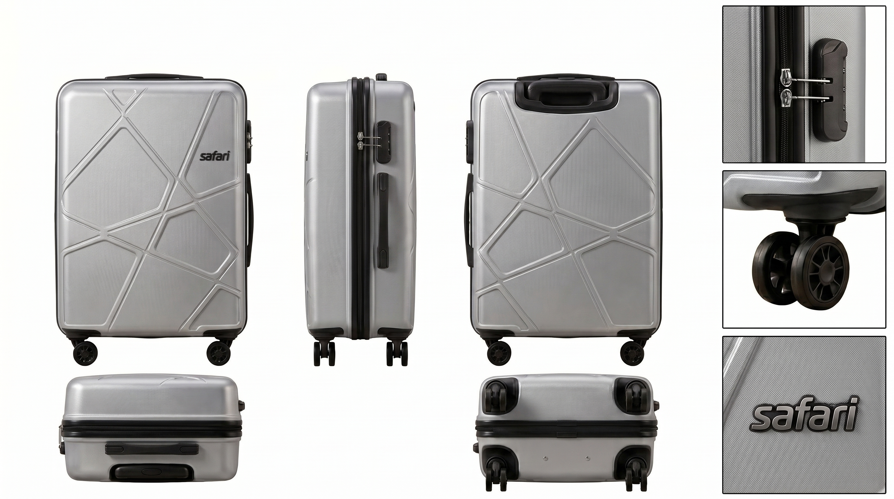
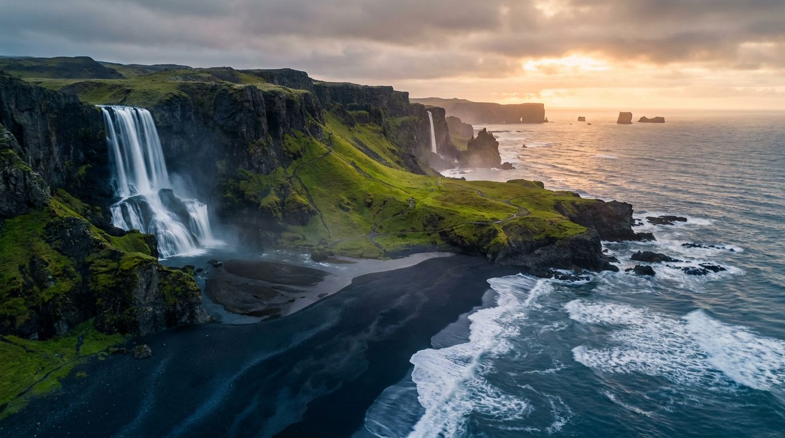
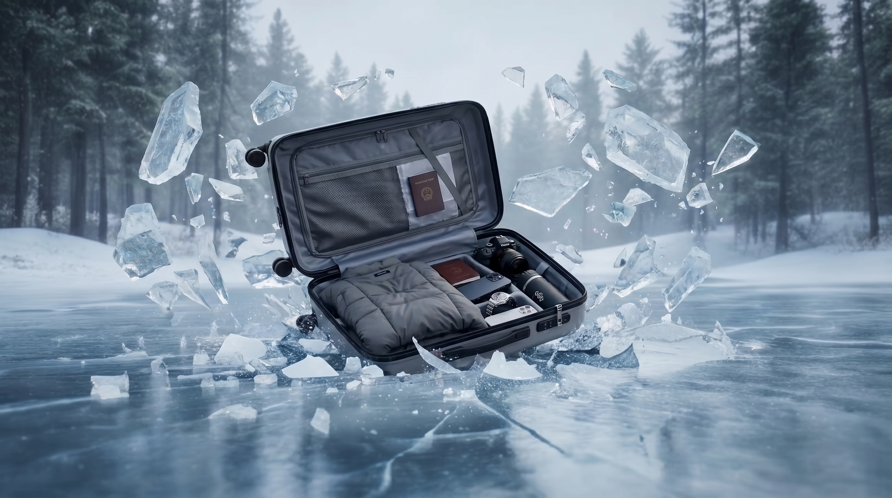
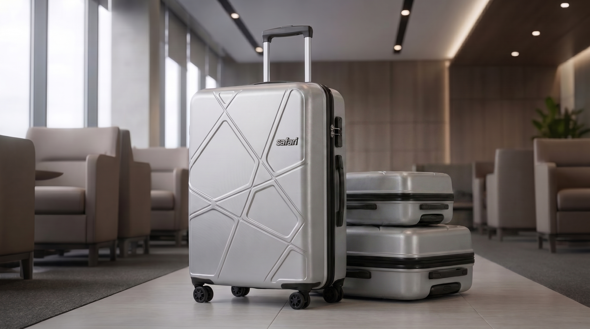

Safari 行李箱不仅是一款出行工具，更是对"Travel in Style"理念的极致践行。我们将先锋的几何力学设计与极简美学自然融合，重新定义了硬核出行的视觉标准。灵感源于对未知旅途的探索渴望，Safari 以冷峻的金属银色泽与多边形切割面板，赋予了产品坚不可摧的视觉张力。从严谨的多维空间解构，到无惧极端环境的极限测试演绎，它不仅仅是一个收纳空间，更是你跨越边界、探索世界的可靠伙伴。
不只是远行，更是一场从容的征服。
Safari 概念旅行箱，以极简的几何线条切割金属质感，在光影流转中重塑出行的美学标准。



